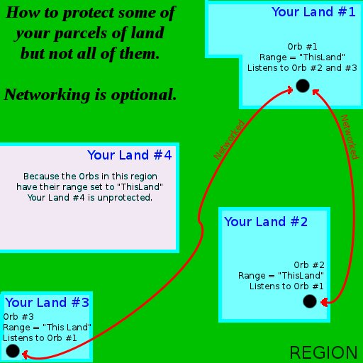
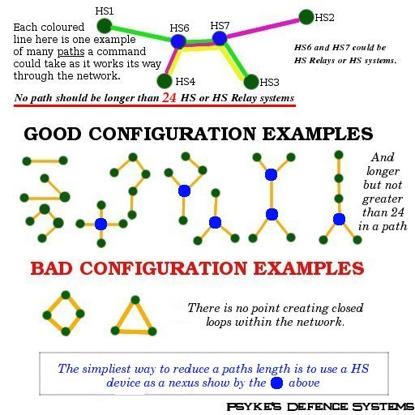
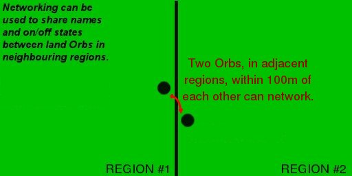

A 13-as vagy újabb HS Orb verziót igényli
A 13-as vagy újabb HS Orb verziót igényli
| Kezdőlap > HSOrb Dokumentáció > Hálózat | PSYKE'S
DEFENSE SYSTEMS® |
Bolt |
A 13-as vagy újabb HS Orb verziót igényli
4 294 967 296-hoz 1 az
esélye egy duplikált HSID hálózati azonosítónak. Szóval figyelj erre!
:) Ha a HS-t az inventorydba
teszed, majd újra kiveszed, a HSID-je meg fog változni!| HS Orb |
HS Orb | HS Orb | ||
| Saját HSID: 00000001 |
Saját HSID: 00000002 |
Saját HSID: 00000003 |
||
| Ezt hallgatja: 0000002 |
Ezeket hallgatja: 00000001 és 00000003 |
Ezt hallgatja: 00000002 |

| |
Ha 24-nél több HS Orb-ot és HS
Relay rendszert kötsz össze egyetlen útvonalon,
az egy vagy több
HS rendszer kimaradásához vezethet a parancsok fogadásából. (Minden továbbított parancshoz hozzá van fűzve azon HS rendszerek és Relay rendszerek HSID-je, amelyek már látták a parancsot. Ha a továbbított üzenet hosszabb lesz, mint 255 karakter, a parancs törlődik a hálózatból.) |

